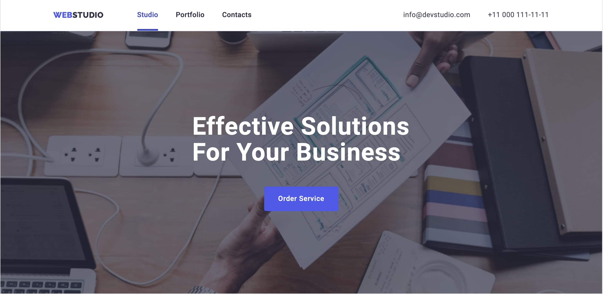

LIUDMYLA PALADIICHUK
Junior Frontend developer
I learn fast, responsible and purposeful Front-End developer with knowledge of HTML, CSS, JS and React. I have experience of working in a team . I confidently and conscientiously carry out the assigned tasks and in difficult and dynamic conditions I quickly adapt to the situation and solve them as efficiently as possible. Ready to undergo an internship. I will consider all job offers.
Project experience
- 
WebStudio
A business application that helps you find better solutions for automating simple operations. Used technical skills: HTML5/CSS3, Adaptive design, GIT. The whole project was developed by me.
 Simply Chocolate
Simply ChocolateAn app with a responsive layout, swiper, and order form. Used technical skills: HTML5/CSS3, Adaptive design, GIT, JavaScript. In this project, I developed a header.
-
 Tasty Treats
Tasty TreatsThis website is for sharing recipes. Where you can save interesting recipes for yourself, give them feedback. Skills used here: HTML\CSS, JavaScript, adaptive layout, Rest API, GIT. In this project I designed a modal window.
-
 Healthy Hub
Healthy HubThis is a web application for monitoring the water consumed, counting calories. Which calculates data exclusively according to user parameters. In this project, I worked with Redux and its state, partly with the configuration page.
Education
- 2023 : IT School GoIT\Full Stack Developer Download the certificate
- 2013-2019 : Chernivtsi National University n. Yury Fedkovich\ Finance, banking and insurance Download diploma